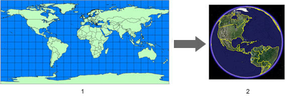
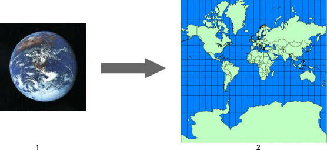
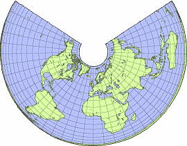
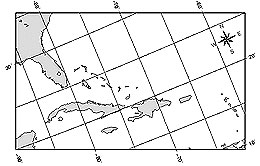
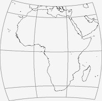
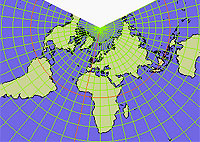
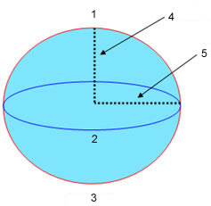

Use the Data Import feature to import your custom geographic data into Google Earth and view it as you would any of the layers in the Layers panel. When you use this import feature, you are importing two basic kinds of data:
Once you import vector or imagery data into the Google Earth application, you can save your modified data just as you would other types of placemarks or overlays.
Google Earth Pro and EC support the following kinds of vector data:
The process of importing vector data files is simple:
Once imported, the vector elements appear in the 3D viewer and the imported file is listed under the Temporary Places folder. Labels, icons, color, and description appear just as they do for other types of places and folders depending upon how you have defined them using the style template.
The rest of this section covers the following topics:
Google Earth EC and Google Earth PRO users with the data import module can import the following vector file formats:
Most third-party GIS vector data comes as a collection of related files that operate together to produce all the vector data you see in Google Earth. Be aware that if expected data does not display in the 3D viewer, it might be due to missing support files. Those vector file types that require additional support files are indicated in the list above.
In addition to importing vector data in SHP, TAB, and other formats, you can define your own point data and import it into Google Earth.
Generic text files need named columns whose values are separated either by commas, spaces, or tabs. Do this by creating your data in a spreadsheet application such as Microsoft Excel and then saving the file as either CSV or TXT format. Alternatively, you could use a programmatic method to extract data from a database and produce a final output file in either CSV or TXT format.
For more information on using generic text files, see:
At minimum, generic text file that you import must contain one or more fields that specify the location of the point on the earth in order for the data to be correctly positioned in the 3D viewer. This can be specified either with address fields or with geographic coordinates.
Tip: Follow a tutorial on this subject: Importing Addresses in Google Earth Pro and EC
Your data file can use street-level addressing to position each point on the Earth's surface. Google Earth can ingest georeferenced and non-georeferenced information. At this time, Google Earth can only ingest such information for addresses located within the United States, United Kingdom, Canada, France, Italy, Germany, and Spain. Google Earth cannot place any address that contains a P.O. box.
The following types of address formatting are supported:
You can use geographic coordinates (latitude, longitude) to indicate the position of the point data in your text file. For importing generic text files, Google Earth supports coordinates described in
Refer to Entering Advanced Coordinates for a detailed description of the latitude/longitude coordinates supported in Google Earth as well as the type of syntax supported.
You can use any number of fields in your custom data file to label and describe the points and display them the Google Earth application. Optional fields can be defined as the following values:
With style templates, you can take advantage of these field types to create useful visual effects in the 3D viewer such as graphs or color-coding of data based on the values in the fields.
After you have imported vector data into Google Earth, you can use the Table Window to display the data fields contained within the vector data. To do this, select Table from the Tools menu. The window appears over the Google Earth application, listing the data fields of all placemark items in tabular form.
The Table window displays internal data fields for all vector data currently listed as well as all other entries in the Places panel. You can use the scroll bar to the right of the window to scroll through numerous entries, and you can collapse the display of items you don't want to see by removing the check next to the name of the item you want to minimize.
The Table window offers the following features:
When you import point and line vector data into Google Earth, you can determine how you want your data displayed in one of two ways:
You can open GIS imagery files in Google Earth Pro or EC and have the files correctly projected over the proper map coordinates in the 3D viewer. Google Earth Pro and EC support the following types of GIS imagery:
In addition, you can also import the following images. Because they do not contain projection information, you must manually edit their coordinates for correct positioning:
The rest of this section covers:
Use any one of the methods below to open the imagery file in Google Earth Pro or EC:
Google Earth then attempts to reproject the image to a Simple Cylindrical, WGS84 coordinate system. From this, it creates an overlay with the image converted to PNG format. The overlay edit window appears, and you can set the location of the new overlay in any folder inside the Places panel. You can also set the properties for the GIS imagery as you would any other overlay.
The following should be noted when importing GIS imagery data:
Once you have imported imagery data into Google Earth Pro or EC, you can save content changes made to the imported GIS data as follows:
Google Earth uses Simple Cylindrical projection with a WGS84 datum for its imagery
base.

Typically, the data you import into the Google Earth application is created with a specific geographic coordinate system, such as a Universal Transverse Mercator (UTM) projection and a NAD27 datum (North American Datum of 1927). Each geographic coordinate system may assign slightly different coordinates to the same location on the earth. When you import data into Google Earth, your data is interpreted according to the Google Earth coordinate system.
In the majority of cases, reprojection works as expected. In some situations, the transformation might not work properly. In that case, you can use a third-party tool to transform your data from its original coordinate system into the one used by Google Earth.
The rest of this section provides a brief overview of map projections and datums.
A map projection is a mathematical expression that is used to represent the round, 3D
surface of the earth on a flat, 2D map.

This process always results in distortion to one or more map properties, such as area, scale, shape, or direction. Because of this, hundreds of projections have been developed in order to accurately represent a particular map element or to best suit a particular type of map.
Data sources for maps come in various projections depending upon which characteristic the cartographer chooses to represent more accurately (at the expense of other characteristics). In the example above, the Mercator projection preserves the right angles of the latitude and longitudinal lines at the expense of area, which is distorted at the poles, showing the land masses there to be larger than they actually are.
The following are some common map projections:
|
|
Projection | Description | Example |
| Albers Equal Area Conic | Typically used for small regions or countries extending in an east-to-west direction, but not continents. Preserves angles between meridians and parallels. Attempts to minimize distortion for both shape and linear scale, but neither is truly correct. The example here shows how this projection looks over the entire earth. |  | |
| Oblique Mercator (Hotine) | A cylindrical projection like the Mercator projections, but where the cylinder is shifted to align with a region that is oblique and follows neither a north-south nor an east-west axis. The region to be mapped typically is a small portion along the length of the meridian and close to it laterally. For example, this projection was developed originally for mapping the Malaysian peninsula. |  | |
| Chamberlin Trimetric | Used by the National Geographic Society for mapping most continents. This projection is a three-point equidistant one, intended to preserve the distance between three reference points relative to any other point. |  | |
| Lambert Conformal Conic | A projection ideal for middle latitudes and/or where the territory to be mapped has an east-west orientation. This projection is often found in USGS maps created after 1957. Scale is most accurate at the expense of area. |  |
When building whole-earth databases, a single global projection is the most convenient to
use. Google Earth uses Simple Cylindrical projection for its imagery base. This is a
simple map projection where the meridians and parallels are equidistant, straight lines,
with the two sets crossing at right angles. This projection is also known as Lat/Lon
WGS84.
While a projection is used in mapping to define the earth on a flat surface, a datum is used to describe the actual shape of the earth in mathematical terms. This is because the earth's surface is not perfectly round, but ellipsoid in shape. A datum also defines the association of latitude and longitude coordinates to points on the surface of the earth, and defines the basis for elevation measurements.
As with projections, there is more than one mathematical interpretation of the earth's shape. Google Earth uses WGS84 datum.
|
|
 |
|
|
|
Semi-major axis | Semi-minor axis | |
| NAD83 | 6,378,137.0 | 6,356,752.3141 | |
| WGS84 | 6,378,137.0 | 6,356,752.3142 | |
| Clark 1866 | 6,378,206.4 | 6,356,583.8 | |
| Airy 1830 | 6,377,563.4 | 6,356,256.9 |

©2010 Google - Privacy Policy - Terms and Conditions - About Google
Updated on